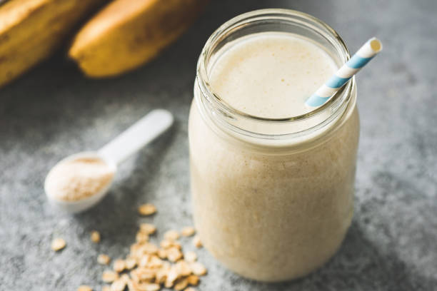

Protein Smoothie Recipe

Description
The best part about protein smoothies is their freedom of choice. I'm
going to suggest my personal choice of fruit, peanut butter, etc, but you
can easily adjust to your own preference.
Protein smoothies are a great choice post-workout, but are also a great way
to simply make a tasty drink more nutritional. When you hear "protein smoothie"
you probably just think of a fruit smoothie with protein powder added, but
most enjoyers of this snack will make extra additions that distinguish it further.
Ingredients
- Frozen strawberries (or fresh)
- Frozen banana (or fresh)
- Smooth, low sugar Skippy's peanut butter
- Cabot Creamery nonfat greek yogurt
- Raw honey, any brand
- Fairfield Core Power Elite Protein Shake, Strawberry
- Alternative: BPN Whey Protein powder (chocolate)
- Kale leaves (you won't even taste this, I promise)
- (Optional) Chia seeds
- (Optional) Scoop of ice cream
Steps
- If strawberries/bananas are fresh, cut into small pieces
- Grab blender, don't plug in
- Add to blender fruit, then yogurt, then peanut butter, then everything else, protein shake last
- FIRMLY close blender lid
- Plug in blender and turn to highest setting until consistency of your preference
- Enjoy!
Homepage